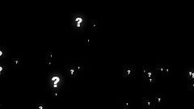

VOORSTELLINGEN
Volgende voorstelling:
Invidia
We zijn volop bezig met het uitschrijven van het script.
Je kan nu al plaatsen reserveren.
Met: Silke Soille, Inne Stuyven, Vincent Hofmans, Auke Dehonm, Charlotte Remmerie, Lotte Vanaeken, Luna Stringer, Willem Seyneave en Arno Rondou.
Vorige voorstellingen:
Liberosis
Liberosis: n. the desire to care less about things -to loosen your grip on your life, to stop glancing behind you every few steps, afraid that someone will snatch it from you before you reach the end zone-
Iemand uit de vriendegroep is plots verdwenen. Hoe reageer je dan? Geef je de anderen de schuld? Langzaam maar zeker ontstaat er een muur die de groep verdeelt. Is de vriendschap sterker dan de muur? 5 jongeren vinden zichzelf in de zoektocht naar hun vriendin.
Met: Silke Soille, Vincent Hofmans, Luna Stringer, Simme Verschoren en Lotte Vanaeken.
Partners: MijnLeuven, Brasserie 't Goe Gedacht, Episphere(Jazz), Aspergeveldproductions (audiovisuele en grafische communicatie), Voetenwerk (huidzorg en relaxatie), Pierenhof (feestzalen verhuur), X-pair (communication).
Unlabeled
Stel je voor: je wordt wakker in een donkere kamer. Je voelt je suf, je hoofd bonst en je ligt op een ijzig koude vloer. Je weet niet hoe of waarom je in dewe kamer verzeild geraakt bent. Het enige dat je ziet is een bokaal en een grote rode digitale klok die aftelt. Op je arm plakt een papiertje, met daarop het woord "naïef" geschreven. Je schrikt door een luid een paniekerig geschreeuw.
'Unlabeled' gaat over een groep mensen die wakker wordt in een donkere ruimte met enkel een bokaal en één grote aftelklok. Zonder uitgang of idee wat ze daar doen en hoe ze er terecht gekomen zijn, proberen ze te overleven.
Met: Silke Soille, Vincent Hofmans, Auke Dehonm, Charlotte Remmerie en Arno Rondou.
Partners: MijnLeuven, Brasserie 't Goe Gedacht, Episphere (Jazz), Aspergeveldproductions (audiovisuele en grafische communicatie), Voetenwerk (huidzorg en relaxatie), Pierenshof (feestzalen verhuur), X-pair (communication).
Krachtig
WAT ALS KRACHTEN ALLES KONDEN VERKLAREN?
Wat als alles zo logisch was, zoals iedereen leert op school en in de wetenschap? Wat als je daar helemaal in mee bent? En wat als dan blijkt dat het eigenlijk allemaal niet zo simpel te verklaren valt?
'Krachtig' vertelt het vehaal van een jongen die alle fysicawetten achterstevoren zou kunnen opzeggen, indien het nodig moest zijn. Zijn leven loopt op rolletjes en dat kan gij zo houden ook, dankzij de wetenschap. Maar wat met meisjes? Heeft Newton daar ook wetten voor?
Voor de eerste keer spelen de jongeren van La Mouche Rouge hun nieuwe, zelfgeschreven stuk voor publiek. Mogen wij u voorstellen: KRACHTIG!
Met: Auke Dehon, Vincent Hofmans, Silke Soille, Ianthe Soille, Charlotte Remmerie en Arno Rondou.
Partners: MijnLeuven, Wisper vzw, X-pair Communication, Latin Groove, Aspergeveld Productions, Episphere, Wups Biocatering, Verzekeringskantoor VanderHulst, Apotheek Kerkveld, Carrefour Express, Belfius.
Ik weet wat je wil
De allereerste show. Geschreven door Ianthe.
Ik Weet Wat Je Wil vertelt het verhaal over twee meisjes die in een speciale relatie tot elkaar leven. Ze verzinnen hun eigen wereldje en sluiten zich bijna volledig af van de doldraaiende maatschappij. Zij willen laten zien dat niets is wat het lijkt. Mensen steek je niet zomaar in hokjes en deze twee meisjes zeker niet. Maar overleven ze elkaar wel in hun eigen gecreëerde hokje?